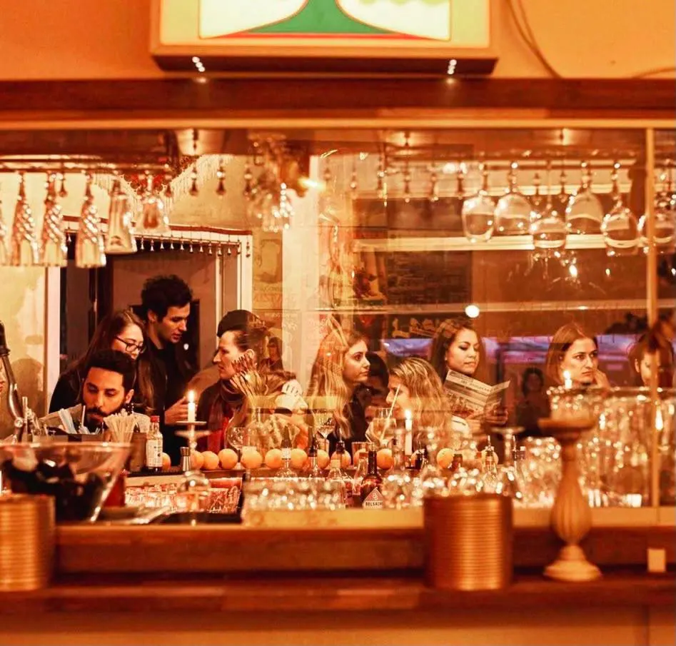
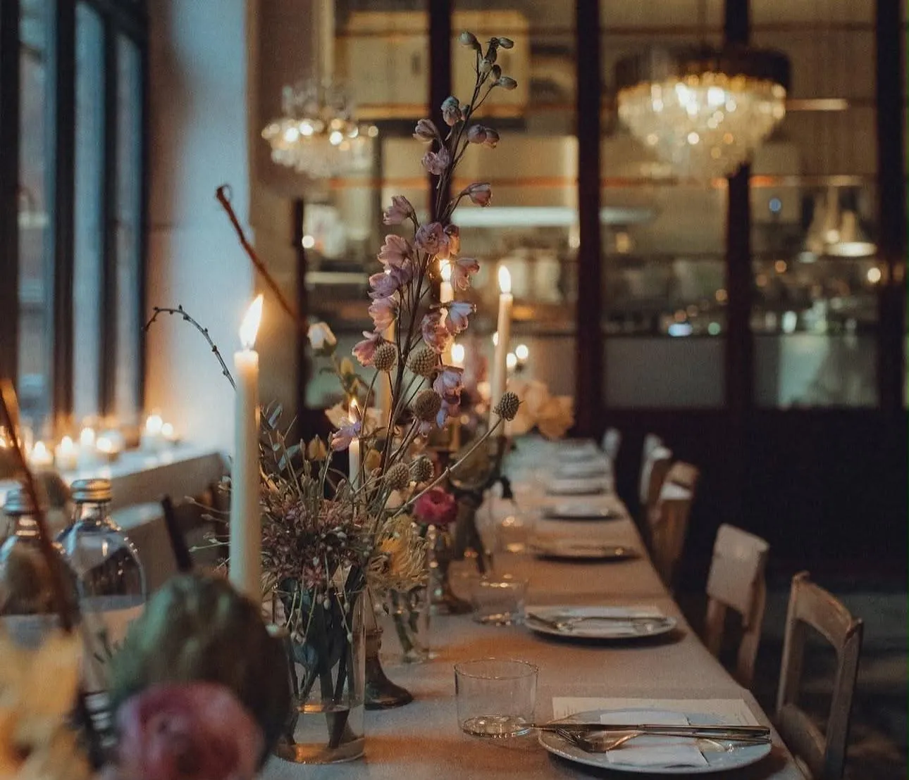
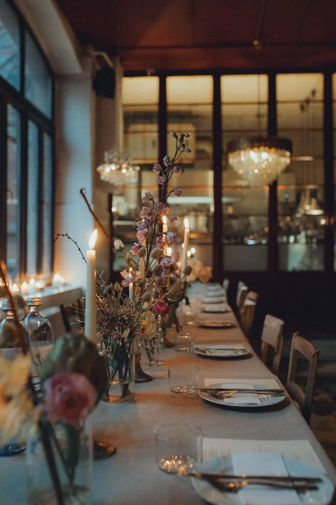
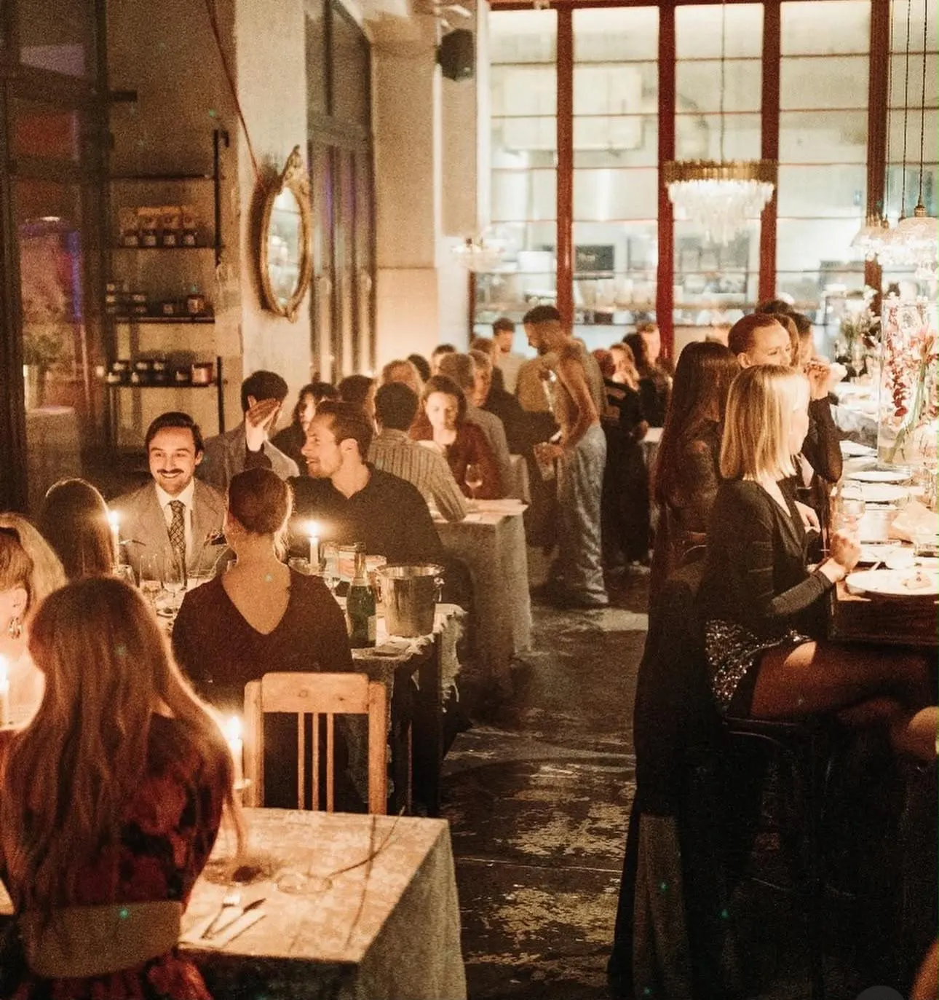
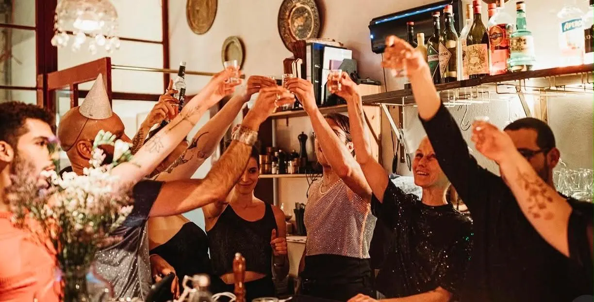

הקמת עסק חדש
מסעדות · מלונות · קונספטים חדשים
מהרעיון ועד ערב הפתיחה – עם תוכנית שמחזיקה מים כבר מהיום הראשון.
- תוכנית עסקית, תקציב ותכנון פיננסי
- קונספט, מיתוג וחוויית אורח
- תכנון תפעולי, ספקים וסטנדרטים
- גיוס והכשרת צוות פתיחה
ייעוץ, הקמה וניהול מערכי מזון ומשקאות למסעדות ולמלונות – מהקונספט ועד השורה התחתונה. למעלה מעשור של הובלת מותגי אירוח בברלין, כבעלים וכמנהלת.

התחלתי מאחורי הבר ובשירות בתל אביב, התקדמתי לניהול אירועים, ובברלין הקמתי מאפס את Yafo – מסעדה ובר בני 200 מקומות ישיבה שהפכו לאחד ממוקדי האירוח הישראלי המוכרים בעיר. אחריה הגיעה Shishi, מסעדת שף על עקרונות Farm to Table, ושיתופי פעולה עם מלונות: הפיכת הלובי של Amano למסעדה של ממש, והובלת כל מערך המזון והמשקאות של Selina ברלין.
היום אני מביאה את הניסיון הזה לבעלי מסעדות, יזמים ומלונות: מבנה תפעולי, שליטה בעלויות, צוות שיודע לארח, וחוויה שאורחים חוזרים אליה. בלי תיאוריה – רק מה שהוכח מול קהל אמיתי, כל ערב.
תואר ראשון בתקשורת ומנהל עסקים · אזרחות ישראלית וגרמנית · עברית, אנגלית וגרמנית.
למסעדות, לבתי מלון ולמתחמי אירוח. אפשר לבחור מסלול אחד או לשלב – ואפשר גם להעביר אליי את ניהול ה-F&B כולו, במודל מיקור חוץ.
מהרעיון ועד ערב הפתיחה – עם תוכנית שמחזיקה מים כבר מהיום הראשון.
אבחון מהיר, החלטות ברורות והחזרת השליטה לידיים שלכם.
לעסק שעובד ורוצה לצמוח – או למלון שרוצה מערך F&B מקצועי בלי לבנות אותו לבד.
הפקה והובלה של אירועים, ובניית מחלקת אירועים רווחית בתוך עסק קיים.

בתי מלון רבים יודעים לארח לילה, אבל לא תמיד לנהל מטבח, בר ולובי כעסק רווחי. ב-Selina ברלין הובלתי את כל מערך המזון והמשקאות לפי יעדי KPI ובמודל שותפות; ב-Amano הפכנו לובי מלון למסעדה של ממש. את אותו מודל אני מביאה למלונות בוטיק, מתחמי אירוח ומסעדות שרוצים תוצאה – לא עוד יועץ.
מבינים איפה העסק נמצא, מה היעד ומה מפריע להגיע אליו.
בחינה של התפעול, המספרים, הצוות והמותג – בשטח, לא רק בגיליון.
סדרי עדיפויות ברורים, יעדים מדידים ולוחות זמנים.
עבודה צמודה בשטח, עד שהשינוי מחזיק גם בלעדיי.
הקמה וניהול של מסעדה בת 200 מקומות ישיבה, עם אירועים שבועיים – מוסד ישראלי בברלין, תחילה במיטה (Mitte) והיום בקרויצברג.
הובלת כל מערך המזון והמשקאות במלון, לפי יעדי KPI ובמודל שותפות.
הפיכת לובי מלון למסעדה של ממש ופיתוח המותג בתוכו.
מסעדת שף בעבודה ישירה מול חקלאים, עם חומרי גלם מספקים נבחרים בברנדנבורג.
“Yafo is one of the most fun dinners you can have in the city.”
״Yafo היא אחת מארוחות הערב הכי כיפיות שאפשר לאכול בעיר.״
The Infatuation לכתבה“…brought a welcome spot of balagan to a buttoned-up corner of the city.”
״…הביאה בלגן מבורך לפינה מכופתרת של העיר.״
The Berliner, 2023 לכתבה“…that high standard of service so rare to find in Berlin.”
על Shishi: ״…רמת שירות גבוהה שכל כך נדיר למצוא בברלין.״
Expats in Wonderland לכתבהמה שלמדתי בעשור של מסעדות ומלונות בברלין – כתוב לבעלי עסקים, למנהלי מלונות וליזמים.

מלונותלובי הוא הנכס הכי פחות מנוצל במלון. מה עשינו ב-Amano, ומה כל מלון יכול ליישם.

מיקור חוץמודל שותפות, KPI ומי באמת אחראי על הצלחת המסעדה. לקחים מ-Selina ברלין.

הבראהעלות מזון, עלות עבודה ו-P&L שבועי – למה מסעדות מצליחות מפסידות כסף, ואיך עוצרים את זה.
כמה פרטים על העסק ועל מה שאתם צריכים – ואחזור אליכם תוך 24 שעות לתיאום שיחת היכרות.